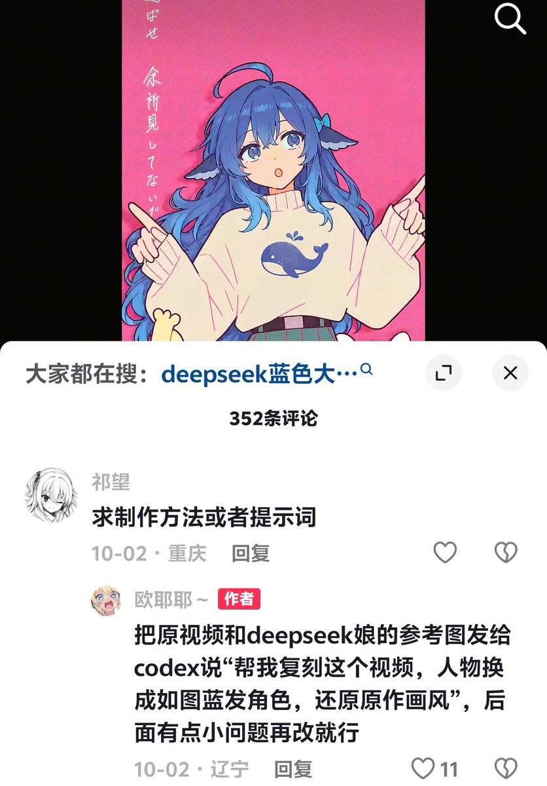

猫弦ACT *🍥
@maoxianACT
评论吵女权男权好严重，这明明是开发者小鲸鱼形象的二创，但是因为使用了ai所以导致愤怒，小鲸鱼也不是男生的喜爱，女性开发者也喜欢鲸鱼形象的。
重要的应该是自己创作而不是ai创作，这和鲸鱼形象无任何关联，如果是一个男性Deepseek形象使用了ai进行二创（版权，因为原作者是通过绘画创作的）也会骂的

林刻雪（重生版）
@nivelleRainettr
把日本原画师的手书视频作品ai给ds的鲸鱼娘拟人，而且评论区已经有人提醒原作者禁止ai，结果这人还好意思说“自己做”，评论区也是全跟个应声虫一样说什么开源精神，你家开源精神就是剽窃吗😂😂😂DeepSeek鲸鱼娘的“某些受众”会不会太有素质了。。。 https://t.co/OwRY1Rpgw9